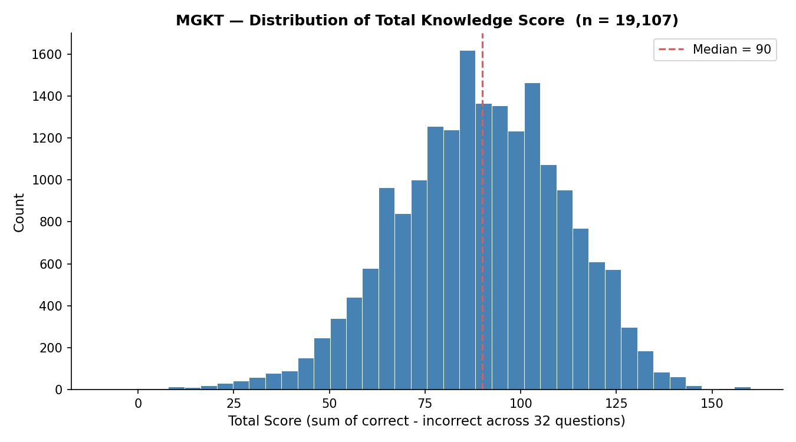
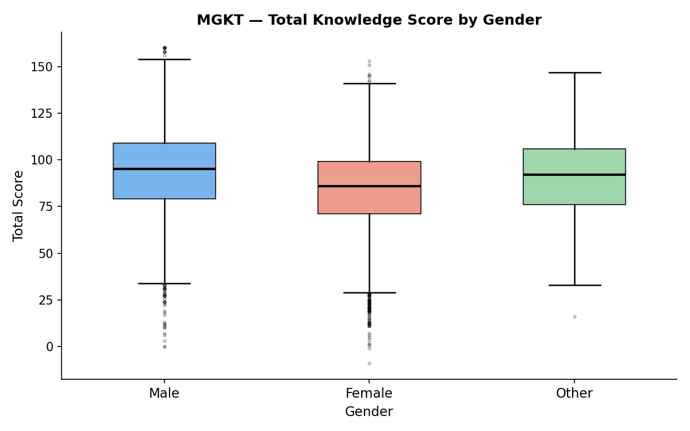

Goal
The MGKT covers 32 heterogeneous knowledge domains — from geography and science to pop culture. Using this publicly available dataset, I wanted to answer two questions: What does the overall knowledge-score distribution look like across respondents? And does total score differ systematically by gender, or is within-group variation large enough to dwarf any group difference?
Procedure
- Data source: Downloaded the raw CSV from the Open-Source Psychometrics Project (MGKT_data.zip), which contains 19,218 complete test sessions collected online in 2017–2018.
- Cleaning: Retained only rows where age is between 13 and 80 (removing implausible entries) and where gender was explicitly stated (dropping the 0 = "unstated" category). This left 19,107 rows (0.6% attrition).
- Score construction: Each of the 32 questions records a score (correct answers selected minus incorrect answers selected, column
QXS). These were summed across all questions to form a single total-knowledge score per respondent. - Figure 1 — Descriptive: A histogram of the total-score distribution with 40 bins, with the group median marked, to characterise the shape and central tendency of knowledge scores.
- Figure 2 — Relational: Side-by-side box plots of total score split by gender (Male / Female / Other), annotated with group n and median, to assess whether score level differs across groups.
- Reproducibility: All steps are encapsulated in
src/load_data.pyandnotebooks/01_explore.ipynb; anyone with the raw CSV can re-run the full pipeline with a singlejupyter notebookcommand.
Outcome


Caveats
- Volunteer sampling bias: Participants self-selected into an online test, likely over-representing people who are curious, English-literate, and digitally active. Results should not be generalised to any national or global population.
- Self-report limitation: The platform asked respondents "Did you try your best?" and stored only affirmative answers, but effort and motivation still vary in ways the data cannot capture.
- Gender as a binary-plus-other category: The three-option gender variable cannot represent the full spectrum of gender identities; the "Other" group is also small (n ≈ 300), limiting statistical interpretation.
- Causal inference is not possible: Observed group differences in score are descriptive only — they cannot be attributed to gender per se without controlling for confounders such as education, age, or country of origin.
Repository
Full code, notebooks, and figures are available on GitHub.
↗ SuperCandy611 / MGKT-mini-explorerAuthor
Candy Wu · Student ID: 113892001
NCU 認知神經科學研究所 博士二年級
Code developed with assistance from Claude (Anthropic) · May 2026